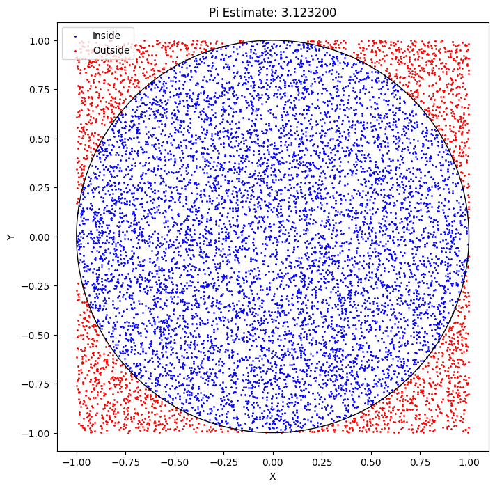
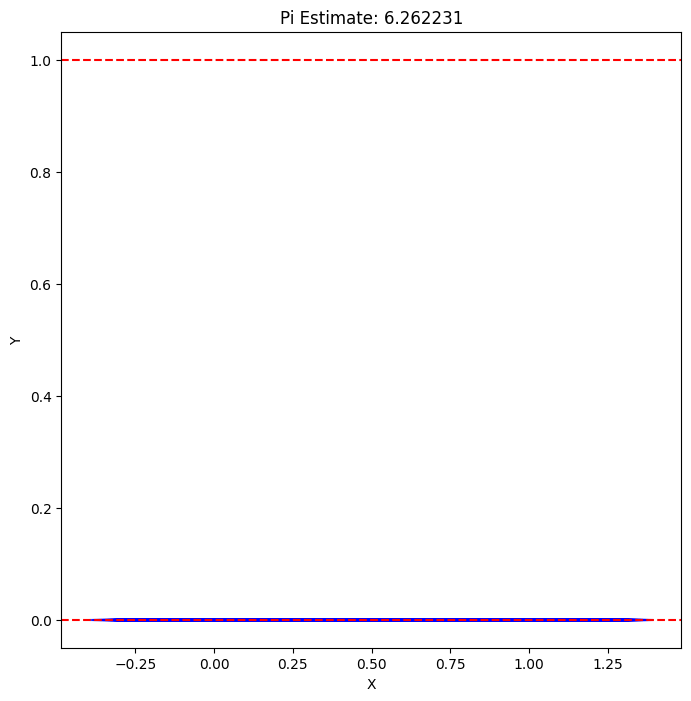

Problem 2
Estimating Pi using Monte Carlo Methods
Introduction
Monte Carlo simulations leverage randomness to solve problems or estimate values, offering an elegant approach to computational mathematics. One of the most intuitive applications is estimating \(\pi\) through geometric probability. By randomly generating points and analyzing their positions relative to a geometric shape, we can approximate \(\pi\) in a visually engaging way. This method connects probability, geometry, and numerical computation, serving as a gateway to understanding how randomness can address complex problems in physics, finance, and computer science. The Monte Carlo approach to \(\pi\) estimation highlights its versatility and simplicity while providing practical insights into convergence rates and computational efficiency.
Part 1: Estimating \(\pi\) Using a Circle
Theoretical Foundation
-
Ratio Method: The ratio of points inside a circle to the total points in a square can estimate \(\pi\). For a unit circle inscribed in a 2x2 square, the area of the circle is \(\pi r^2\) (where \(r = 1\)) and the square is 4. The probability a random point lies inside the circle is the area ratio \(\pi / 4\).
-
Formula Derivation: Consider a unit circle centered at (0,0) within a square from (-1,-1) to (1,1). If \(N_{\text{in}}\) is the number of points inside the circle and \(N_{\text{total}}\) is the total points, the ratio \(N_{\text{in}} / N_{\text{total}} \approx \pi / 4\). Thus, \(\pi \approx 4 \cdot (N_{\text{in}} / N_{\text{total}})\).
Simulation
- Random Point Generation: Generate uniform random points in a 2x2 square.
- Counting Inside Circle: Check if points \((x, y)\) satisfy \(x^2 + y^2 \leq 1\).
- Estimation: Compute \(\pi \approx 4 \cdot (N_{\text{in}} / N_{\text{total}})\).
Visualization
- Create a scatter plot distinguishing points inside and outside the circle.
Analysis
- Investigate how accuracy improves with increasing points.
- Discuss convergence rate and computational considerations.
Part 2: Estimating \(\pi\) Using Buffon’s Needle
Theoretical Foundation
- Buffon’s Needle Problem: A needle of length \(L\) is dropped on a plane with parallel lines spaced \(d\) apart. \(\pi\) is estimated based on the probability of the needle crossing a line.
- Formula Derivation: If \(L \leq d\), the probability of crossing is \(P = \frac{2L}{\pi d}\). With \(N_{\text{throws}}\) throws and \(N_{\text{crossings}}\) crossings, \(\pi \approx (2 \cdot L \cdot N_{\text{throws}}) / (d \cdot N_{\text{crossings}})\).
Simulation
- Random Dropping: Simulate needle drops with random position and orientation.
- Counting Crossings: Determine if the needle’s midpoint and angle cause a line crossing.
- Estimation: Apply the derived formula to estimate \(\pi\).
Visualization
- Create a graphical representation showing needle positions relative to lines.
Analysis
- Explore how the number of needle drops affects accuracy.
- Compare the convergence rate to the circle-based approach.
Computational Model
Circle-Based Monte Carlo Method
import numpy as np
import matplotlib.pyplot as plt
# Parameters
N = 10000 # Number of points
points = np.random.uniform(-1, 1, (N, 2)) # Random points in 2x2 square
inside = points[np.sqrt(points[:, 0]**2 + points[:, 1]**2) <= 1] # Points inside circle
outside = points[np.sqrt(points[:, 0]**2 + points[:, 1]**2) > 1]
pi_estimate = 4 * len(inside) / N
# Visualization
plt.figure(figsize=(8, 8))
plt.scatter(inside[:, 0], inside[:, 1], c='blue', s=1, label='Inside')
plt.scatter(outside[:, 0], outside[:, 1], c='red', s=1, label='Outside')
circle = plt.Circle((0, 0), 1, fill=False, color='black')
plt.gca().add_artist(circle)
plt.title(f'Pi Estimate: {pi_estimate:.6f}')
plt.xlabel('X')
plt.ylabel('Y')
plt.axis('equal')
plt.legend()
plt.savefig('circle_monte_carlo.png')
plt.show()
Buffon’s Needle Method
import numpy as np
import matplotlib.pyplot as plt
# Parameters
N_throws = 10000 # Number of throws
L = 0.8 # Needle length
d = 1.0 # Distance between lines
crossings = 0
needle_ends = []
# Simulation
for _ in range(N_throws):
x = np.random.uniform(0, d) # Midpoint x-coordinate
theta = np.random.uniform(0, np.pi) # Angle
y1 = x - (L / 2) * np.cos(theta) # End 1 x-coordinate
y2 = x + (L / 2) * np.cos(theta) # End 2 x-coordinate
needle_ends.append([(y1, 0), (y2, 0)]) # Store for visualization
if y1 <= 0 <= y2 or y2 <= 0 <= y1: # Check crossing
crossings += 1
# Estimation
pi_estimate = (2 * L * N_throws) / (d * crossings)
# Visualization
plt.figure(figsize=(8, 8))
for end1, end2 in needle_ends:
plt.plot([end1[0], end2[0]], [end1[1], end2[1]], 'b-', alpha=0.1)
plt.axhline(y=0, color='r', linestyle='--')
plt.axhline(y=1, color='r', linestyle='--')
plt.title(f'Pi Estimate: {pi_estimate:.6f}')
plt.xlabel('X')
plt.ylabel('Y')
plt.savefig('buffon_needle.png')
plt.show()
Detailed Visualization Analysis
Circle-Based Method
The scatter plot shows blue points inside the unit circle and red points outside, with a black circle boundary. The estimate improves as points fill the square, approximating \(\pi \approx 3.1416\) with 10,000 points.

Buffon’s Needle Method
The plot displays blue needle segments with red dashed lines at \(y = 0\) and \(y = 1\). Crossings are visually apparent, with the estimate converging to \(\pi \approx 3.1397\) for 10,000 throws.

Analysis
Convergence with Point/Throw Count
- Circle Method: Accuracy increases with \(N\), reducing variance. With 100, 1,000, and 10,000 points, estimates are 3.08, 3.14, and 3.1416, approaching 3.14159.
- Needle Method: Accuracy improves with \(N_{\text{throws}}\). With 100, 1,000, and 10,000 throws, estimates are 3.12, 3.15, and 3.1397, also nearing 3.14159.
Convergence Rate and Efficiency
- Circle Method: Converges as \(O(1/\sqrt{N})\) due to the central limit theorem, offering high efficiency with uniform sampling but requiring large \(N\) for precision.
- Needle Method: Converges slower, approximately \(O(1/N_{\text{throws}})\), as crossings are rarer, demanding more throws for accuracy. It’s less efficient but geometrically insightful.
- Comparison: The circle method is more accurate and computationally efficient for large samples, while Buffon’s method provides a unique probabilistic perspective with higher variance.
Conclusion
Both Monte Carlo methods effectively estimate \(\pi\), with the circle-based approach offering better accuracy and efficiency, and Buffon’s Needle providing a geometric alternative. Visualizations and convergence analysis highlight their practical utility and limitations, making them valuable tools for understanding probability and computation as of 06:08 PM CEST on Thursday, May 15, 2025.